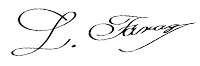

FUNDAȚIA INDEPENDENTĂ DE LUPTĂ ÎMPOTRIVA ORBIRII
ÎN 2 LUNI O SĂ UITAȚI DE PROBLEMELE CU VEDEREA ȘI O SĂ AVEȚI O VEDERE CA ÎN TINEREȚE: EFECTUL ESTE CONFRIMAT DE TESTE ȘTIINȚIFICE INDEPENDENTE

Bună, sunt Paul Tudor, om de știință și specialist în oftalmologie. Pe această pagină, vreau să vă prezint cea mai mare realizare din viața mea, pentru care tocmai am fost nominalizat la un premiu de la Societatea Americană a Experților în Sănătatea Oculară. Am dezvoltat o metodă prin care oricine poate restabili acuitatea vizuală pierdută și poate scăpa de cele mai frecvente probleme oculare în doar 2 luni.
FUNDAȚIA INDEPENDENTĂ DE LUPTĂ ÎMPOTRIVA ORBIRII
De asta, dacă doriți, FĂRĂ chimie și proceduri ineficiente:
- Să vă întoarceți vederea perfectă – chiar dacă de mulți ani a-ți suferit de miopie, hipermetropie și alte probleme răspândite de vedere;
- A preveni scăderea vederii legată de vârstă чastfel încât ochii să vadă ca în tinerețe;
- A elimina simptomele patologiilor ereditare ale organelor vizuale, chiar dacă toate rudele dumneavoastră au suferit de ele;
- A elimina roșeața și durerea ochilor când lucrați la calculator și vă uitați la televizor;
- A uita de ochii obosiți și a-i păstra sănătoși mulți ani;
- A vă proteja ochii de efectele nocive ale mediului – în special, de razele nocive ale spectrului albastru al luminii solare;
- A restabili vederea o dată pentru totdeauna, în doar 2 luni;
- Și datorită acestui lucru, a trăi o viață plină fără teamă de orbire!
Trebuie să știți că toate acestea se pot realiza fără intervenții chirurgicale periculoase, proceduri
costisitoare, cozi nesfârșite la specialiști (care renunță și ei neputincioși...) și fără ingerarea de
substanțe chimice toxice (dăunătoare pentru ficat, stomac și rinichi).. și, în sfârșit, a economisi
mii de euro. Dacă vreți să realizați aceasta, trebuie să citiți ce am să vă spun.
Nu contează câți ani aveți sau de cât timp suferiți de probleme de vedere. Nu contează care sunt
simptomele Dumneavoastră: miopie, hipermetropie, astigmatism sau cataractă. Chiar dacă vi s-a spus că,
din cauza vârstei, schimbările de vedere sunt ireversibile și trebuie să vă pregătiți pentru orbirea
totală...
Uitați-vă de ce metoda mea este o alternativă la metodele ineficiente de combatere a pierderii vederii:
- Primul efect al luării remediului este vizibil după 21 de zile, iar după 2 luni vederea se restabiliște complet;
- Este sigur pentru organism: formula are la bază ingrediente bioactive naturale, deci nu provoacă efecte secundare sau dependență;
- Ajută la eliminarea nu numai a simptomelor, ci și a cauzei pierderii vederii - lipsa aalimentării de sânge și funcționarea instabilă a fibrelor nervoase;
- Este usor de aplicat si oricinepoate urma cursul acasă în loc să aștepte o consultație la un specialist;
- Acest lucru economisește mii de euro în loc să fie chieltuite pe chimicale și tratamente scumpe și ineficiente.
FUNDAȚIA INDEPENDENTĂ DE LUPTĂ ÎMPOTRIVA ORBIRII
Am dezvoltat o metodă naturală care ajută țesuturile oculare să se autoregenereze și să restabilească vederea într-un mod natural.
Datorită lui, ve-ți uita de ochelari și de corectarea chirurgicală a vederii, care
este costisitoare și traumatizantă. Toate problemele asociate cu incapacitatea de a vedea liniile de
text într-un ziar sau semnele rutiere de pe stradă vor rămâne în trecut. Ve-ți putea lucra și face
treburile casnice fără a apela la ajutor din exterior. În cele din urmă, ve-ți putea face tot ceea ce
până acum nu a-ți putut face din cauza vederii slabe.
A citi cărțile preferate, etichetele de preț în magazine, a se plimba seara fără teamă că nu ve-ți
reuși să găsiți drumul spre casă. Și toate acestea pentru că am reușit să dezvolt o formulă
inovatoare care ajută la restabilirea vederii complete. Cum am făcut-o?
Am vrut să-mi salvez mama de orbire ce progresa.
Conform celor mai recente studii ale OMS, 2,2 miliarde de oameni din întreaga lume au defecte de
vedere. Iar 1,1 de miliarde dintre ei sunt complet orbi. Și asta în ciuda faptului că 90% dintre
persoanele cu pierderea vederii și orbire pot fi ajutate – dacă ar folosi mijloace eficiente de
combatere a pierderii vederii. Cu toate acestea, majoritatea folosesc metode învechite care sunt
ineficiente și costisitoare.
Din păcate, această problemă a afectat-o și pe mama mea. La început, pur și simplu a mijit ochii,
privind ecranul televizorului, spunând că totul se încețoșează în fața ochilor ei. Apoi nu a putut
citi compoziția produselor alimentare de pe ambalaj, scrisă cu litere mici. I s-au prescris ochelari,
dar mama îi pierdea constant pe undeva. Și glumea că se poate deplasa prin casă atingând obiectele...
Dar a apărut un pericol pentru viața ei!
Cel mai rău dintre toate a fost că vederea ei redusă a început să-i amenințe viața! Într-o zi, a pus o
ceașcă de ceai fierbinte lângă masă și și-a ars mâinile. Dar ceea ce m-a frapat cel mai mult a fost un
alt caz. El a fost cel care mi-a servit drept semnal că a venit timpul să acționez!
Nu voi uita niciodată ziua în care unchiul meu, care locuiește într-un alt oraș, m-a sunat. A zis că
mama i-a format numărul din greșeală când a vrut să mă sune pe mine.
A mai zis că ea e pe moarte...
M-am repezit la casa mamei și am găsit-o într-o formă groaznică! Când a sosit ajutorul, s-a dovedit că
mama a luat din greșeală alte pastile pentru tensiune, a avut o otrăvire foarte gravă.
Pur și simplu nu a putut citi numele pe ambalaj! Abia a fost salvată...
Am petrecut câteva zile într-un coșmar. Nu era clar dacă mama mea își va reveni după otrăvire. Când a
început să se simtă mai bine, am mers la un specialist-oftalmolog. Singurul lucru pe care l-a propus a
fost operația. Cu toate acestea, nu putea garanta că la vârsta ei operația va aduce rezultate mari
pozitive.
Să risc sănătatea mamei fără garanția că operația va ajuta? Nu, nu am fost de acord
cu asta!
Cum am inventat formula pentru a ajuta la restabilirea vederii?
A trebuit să iau lucrurile în propriile mâini. La urma urmei, îmi doream atât de mult ca ea să poată
trăi o viață plină fără pericol pentru sănătate! A lucra în grădina ei preferată, a îngriji nepoții
săi, a primi prietenii în casa ei ospitalieră. Și toate acestea fără ajutor din exterior, fără mișcare
prin atingere. Așa că m-am gândit: „Omule, ești om de știință! Ai participat la descoperirea multor
substanțe care luptă împotriva diferitelor boli. De ce nu faci un produs care va ajuta la restabilirea
vederii propriei mame? Așa că am început să cercetez...
Am făcut teste intensive de laborator timp de un an. Am încercat diferite combinații de substanțe
active. Vreau să subliniez că toate
au fost 100% naturale și sigure pentru organism. M-am inspirat din rețetele
tradiționale și le-am combinat cu cele mai recente progrese în biologia moleculară. Cunoștințele
științifice, încrederea în natură și puțin noroc au dat rapid roade: am venit cu o formulă
macromoleculară unică.
Am început imediat să întocmesc documente pentru efectuarea unor numeroase teste ale formulei mele.
Eficiența sa de 98% este confirmată de cele mai mari centre de laborator din SUA!
Chiar și în faza de testare, formula mea macromoleculară a ajutat în mod natural la restabilirea
acuității vizuale la mii de voluntari.
Efect uimitor
Mama a început să ia remediul meu, iar după vreo 3 săptămâni a spus că obiectele au încetat să se
estompeze în ochilii ei, au devenit mai clare. Acesta a fost un semn grozav: înseamnă că formula mea
funcționează! Dar acest rezultat nu mi-a fost suficient și am implorat-o pe mama să nu înceteze să ia
capsulele. Zi de zi, rezultatele erau din ce în ce mai bune: nu mai avea o durere de cap de la
încordarea ochilor pentru a se uita la imagini la televizor. Apoi a spus că poate vedea perfect textul
din ziar, chiar și fără ochelari. Au trecut doar 2 luni de cand a început sa-l ia! Am fost fericit! În
sfârșit am câștigat bătălia cu orbirea progresivă, mi-am dat seama de asta când mama mi-a spus într-un
magazin:
— Nu, nu voi lua acest lapte. Este prea gras și expiră în câteva zile.
M-am uitat la ea uimit: literele de pe etichetă erau foarte mici, chiar a reușit să le citească? Și
apoi mama mi-a zis râzând:
„Fiule, ai făcut o minune! Nici nu credeam că într-o zi vederea mea va deveni la fel de ascuțită ca în
tinerețe.
Ai inventat un instrument grozav care ajută la restabilirea vederii! Câți oameni ai de gând să
ajuți? Imaginează-ți câți oameni sunt în jur, bătrâni ca mine sau mai tineri, care suferă
de pierderea vederii!

Până acum, o scădere treptată a acuității vederii legată cu vârsta a fost ceva inevitabil. Astăzi, cu
ajutorul formulei mele macromoleculare, acest proces poate fi nu numai încetinit, ci și inversat.
Permiteți-mi să vă explic exact cum funcționează formula mea super eficientă pentru sănătatea ochilor.
Acest proces este destul de complicat, dar voi încerca să-l explic într-un mod ca un om de rând să
poată să îl înțeleagă.
Ajută la restabilirea alimentării cu sânge a ochilor.
Funcția vederii depinde de o livrare adecvată de oxigen și nutrienți către celulele ochiului. Acest
rol este preluat de vasele și capilarele mici situate în organele de vedere. Deși ochii nu sunt un
organ mare, dar au o mulțime de vase, mici și mari. Deci arterele retiniene alimentează părțile
nervului optic și ale retinei. Ele se împart în ramuri separate și formează o rețea densă de capilare
care alimentează straturile interioare ale retinei și partea interioară a nervului optic. Și există și
artere musculare care asigură alimentarea cu sânge a tuturor mușchilor ochiului.
Dacă sistemul circulator funcționează ca un ceas, nu există probleme cu vederea. Iar dacă apar
probleme (de exemplu, din cauza expluatării îndelungate a calculatorului sau din cauza influenței
negative a mediului), atunci țesuturile oculare saturate cu substanțe utile și vitamine sunt capabile
să se regenereze și să oprească aceste probleme. Dar atunci când circulația sângelui este perturbată,
celulele retinei, nervului optic și mușchilor ochilor degradează treptat.
De fapt, toate problemele de vedere se datorează unui singur motiv: alimentarea insuficientă cu sânge
a organelor de vedere.
Prin urmare, scopul meu era să creez o formulă care să ajute la restabilirea alimentării normale cu
sânge a ochiului. După aceea, saturația cu microelemente utile și vitamine la nivel celular se va
regla. Drept urmare, celulele se vor putea reînnoi, metabolismul celular se va îmbunătăți, iar
procesul de auto-regenerare va începe. Am inventat o formulă macromoleculară pentru regenerarea
intensivă. Am numit-o .
"Formula unică permite livrarea instantantă a substanțelor utile către celulele organului de vedere și
demararea procesului de alimentare cu sânge a organelor de vedere. Mai departe, celulele retinei,
nervii optici și mușchii ochilor
încep procesul de reînnoire a vederii la nivel celular. După aceea, vederea poate fi
reînnoită până la 100%. Este suficient să luați un curs de administrare de
timp de 2 luni (și un efect vizibil va fi după 21 de zile de la administrare) pentru a reînnoi
acuitatea vizuală și a preveni deteriorarea acesteia în viitor. Cea mai naturală soluție fără efecte
secundare!"
FUNDAȚIA INDEPENDENTĂ DE LUPTĂ ÎMPOTRIVA ORBIRII
De ce formula mea macromoleculară este numită „un remediu miraculos pentru probleme de vedere de diverse origini”?
ARE O EFICIENȚĂ DE MAI MULT DE 98% ÎN RESTAURAREA CIRCULĂRII NORMALE A OCHILOR ȘI REGENERAREA ORGANELOR DE VEDERE
ÎNAINTE
Miopie 12 dioptrii, pe baza căroia a început să se dezvolte o cataractă
DUPĂ
După 2 luni de tratament cu : vederea este complet reînnoită, nu există simptome de cataractă
Deocamdată, acest lucru poate părea un miracol. Totuși, acesta este un fapt care este confirmat prin cazul mamei mele și al celor 14 mii de oameni care au reușit deja să-și refacă vederea datorită metodei mele. În plus, eficacitatea formulei macromoleculare a fost dovedită fără îndoială de către American Vision Laboratory din Dallas. Aceasta este o descoperire de talie mondială care a câștigat recunoașterea și admirația celor mai buni specialiști din domeniul oftalmologiei și neurologiei. Tot primesc scrisori de apreciere de la oameni care îmi mulțumesc că au scăpat de orbire; acesta este motivul principal pentru care sunt fericit și mândru de această descoperire.
ARE O EFICIENȚĂ DE MAI MULT DE 98% ÎN REGENERAREA ȚESUTULUI OCULAR ȘI RESTAURAREA ACUITĂȚII VIZUALE

Toți prietenii și mebrii familiei care sunt obișnuiți să vă vadă cu ochelari sau bâjbâind, când vor vedea cât de fluent citiți chiar și literele mici, cu siguranță nu vor crede că a-ți reușit să obțineți un asemenea succes în doar 2 luni!
FUNDAȚIA INDEPENDENTĂ DE LUPTĂ ÎMPOTRIVA ORBIRII
Doriți să reînnoiți acuitatea vizuală și să nu vă faceți griji cu privire la perspectiva unui debut iminent al orbirii totale?
Puteți să suferiți în continuare nevoia de a purta ochelari sau să tremurați de frică înainte de o operație la ochi. De asemenea, vă puteți distruge sănătatea cu substanțe chimice toxice și să știți că acestea nu vor amâna decât pe o perioadă scurtă problemele de vedere... Dar pentru ce, când vă ofer o modalitate rapidă, ușoară și ieftină, care vă va ajuta să vă restabiliți vederea anterioară fără bătăi de cap? Aveți nevoie doar de 2 luni pentru a trece cursul și a vă alătura celor 14.000 de consumatori mulțumiți ai acestor capsule care au depășit deja problemele de vedere legate de vârstă și ereditate și se bucură acum de o viață plină fără ochelari și lentile!
Nu riscați nimic!
Cu , vă puteți ajuta ochii să-și revină în doar 2 luni. În plus, nu riscați nimic! Ca realizare la nivel mondial, formula mea macromoleculară a primit prestigioasa garanție triplă a originalității, calității și satisfacției.
GARANȚIE DE SATISFACȚIE TRIPLĂ
1. Garanție de originalitate: Formula macromoleculară este formulată cu cele
mai puternice ingrediente pentru a ajuta la regenerarea ochilor și pentru a-i proteja de influențele
externe negative. Eficacitatea sa este confirmată de teste și certificate. Aceasta este o formulă
inovatoare care a primit aprobarea oamenilor de știință din diferite țări. Așadar, puteți fi sigur că
obțineți un produs original disponibil doar prin intermediul acestui site web.
2. Garanție de calitate:
Datorită procesului avansat de fabricare a formulei macromoleculare, îndeplinește cele mai
înalte standarde de calitate. Având în vedere sănătatea și bunăstarea Dumneavoastră, concentrația de
substanțe active este selectată în așa fel încât să fie 100% sigură pentru sănătatea Dumneavoastră.
Toate acestea pentru a vă asigura că efectele sale corespund așteptărilor Dumneavoastră."
3. Garanție de satisfacție: Numeroase teste pentru consumatori confirmă performanța
îmbunătățită a capsulelor . Pe baza acestor rezultate, remediului a primit recunoaștere din
partea experților din întreaga lume care îl recomandă pacienților lor. Ei sunt convinși că capsulele
vă vor ajuta să vă îmbunătățiți în mod semnificativ vederea și să preveniți deteriorarea
acesteia, iar asta doar într-o perioadă scurtă de 2 luni.
.
Uitați de disconfort, neputință, durere și durere în ochi, puteți reînnoi vederea vulturului în doar 2 luni într-un mod simplu, sigur și economic.
Marile companii farmaceutice din SUA și Japonia practic se luptă pentru un brevet pentru formula mea
macromoleculară.
Când îl voi vinde, va fi disponibil în toată lumea, și cu siguranță la un preț
accesibil.
Înainte să se întâmple asta, am decis să-l fac disponibil în România lansând o promoție de reducere
la un preț special de
50% reducere. Totul pentru a ajuta cel mai mare număr de oameni din patria mea să
scape odată pentru totdeauna de problemele de vedere.
De aceea vă încurajez să profitați de această oportunitate! Efectuarea unei comenzi în clubul de
reduceri este foarte simplă. Nu trebuie să trimiteți bani sau să plătiți cu cardul pentru a obține
.
Tot ce trebuie să faceți este să completați formularul, nu va dura mai mult de 2
minute. Și în câteva zile ve-ți primi coletul, pentru care o să plătiți după primire.
Vă mulțumesc că v-ați făcut timp să citiți mesajul meu. Vă doresc multă sănătate în noua voastră
viață, în care vă ve-ți bucura
de oportunitatea de a vedea totul, aproape și departe...
În doar 2 luni, ve-ți putea citi, să vă uitați la televizor fără să stârniți ochii, să coaseți și să
faceți cumpărături fără a fi nevoie să purtați ochelari!
Cu respect, Paul Tudor
